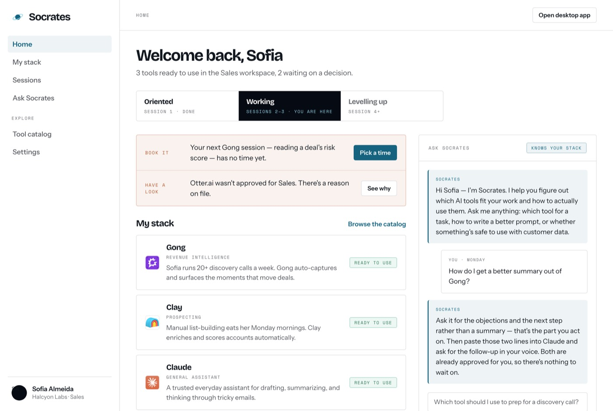
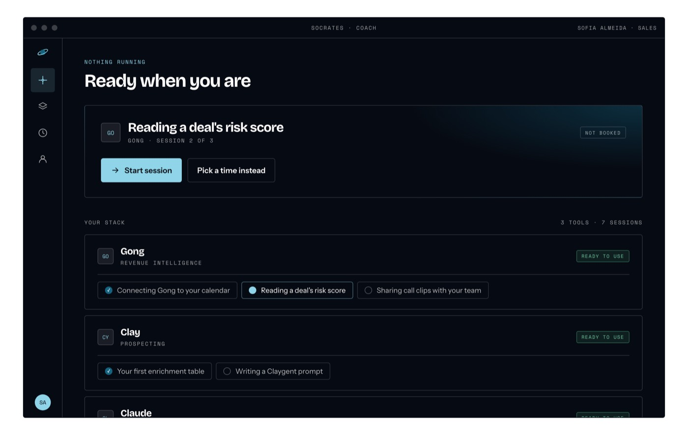
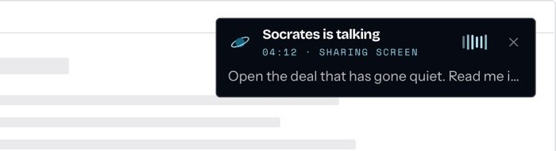

Socrates
April 2026 to nowSocrates is an AI-powered platform designed to democratize access to knowledge and unlock human potential. I believe technology should empower people, not replace them.
It works as an AI mentor for every employee. It finds the right AI tools for each person, from the ones their company allows, and teaches them to use those tools in their real work.

- My role
- Founder
- Where it is now
- Live. The staff at my school are the first pilot.
- What's next
- Bring it to its first paying company.
Everyone says AI will change how you work. Nobody tells you where to start.
There are thousands of AI tools and new ones every week. Most companies haven’t picked any, because they don’t know which ones fit their people, which are safe for their data, or whether anyone would actually use them. So they wait, and the work keeps getting done by hand.
How it works
- InterviewAbout 30 minutes on their real work: what they repeat, what takes too long, what they avoid.
- ToolsA small personal set, chosen from the ones the company allows.
- ApprovalThe team's manager reviews, then the company's admin gives final approval.
- CoachingBy voice, on the person's own screen, one task at a time, until they can do it alone.
What I built


Research agents. AI agents run every morning, look for new and better tools, and keep the catalog current.
English and Spanish. The whole product, including the AI's answers, works in both languages.